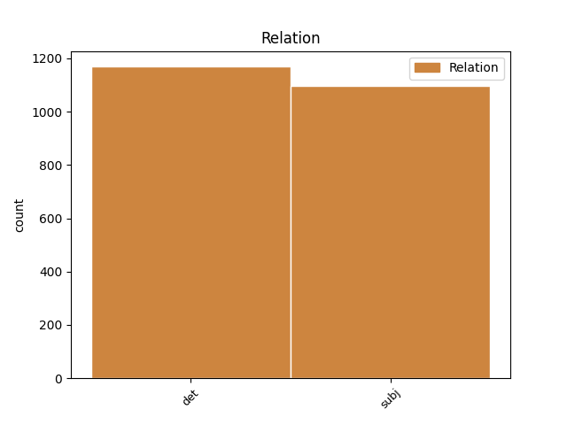

Distribution of features within this leaf

Agreement Rules sorted by frequency.
- When the dependent token is the determiner(det) of the head token,
1 Two _ _ _ _ 0 _ _ _
2 plays _ _ _ _ 0 _ _ _
3 not _ _ _ _ 0 _ _ _
4 included _ _ _ _ 0 _ _ _
5 in _ _ _ _ 0 _ _ _
6 the _ _ _ _ 0 _ _ _
7 First _ _ _ _ 0 _ _ _
8 Folio _ _ _ _ 0 _ _ _
9 , _ _ _ _ 0 _ _ _
10 The _ _ _ _ 0 _ _ _
11 Two _ _ _ _ 0 _ _ _
12 Noble _ _ _ _ 0 _ _ _
13 Kinsmen _ _ _ _ 0 _ _ _
14 and _ _ _ _ 0 _ _ _
15 Pericles _ _ _ _ 0 _ _ _
16 , _ _ _ _ 0 _ _ _
17 Prince _ _ _ _ 0 _ _ _
18 of _ _ _ _ 0 _ _ _
19 Tyre _ _ _ _ 0 _ _ _
20 , _ _ _ _ 0 _ _ _
21 are _ _ _ _ 0 _ _ _
22 now _ _ _ _ 0 _ _ _
23 accepted _ _ _ _ 0 _ _ _
24 as _ _ _ _ 0 _ _ _
25 part _ _ _ _ 0 _ _ _
26 of _ _ _ _ 0 _ _ _
27 the _ _ _ _ 0 _ _ _
28 canon _ _ _ _ 0 _ _ _
29 , _ _ _ _ 0 _ _ _
30 with _ _ _ _ 0 _ _ _
31 scholars _ _ _ _ 0 _ _ _
32 agreed _ _ _ _ 0 _ _ _
33 that _ _ _ _ 0 _ _ _
34 Shakespeare _ _ _ _ 0 _ _ _
35 made _ _ _ _ 0 _ _ _
36 a a DET RI Definite=Ind|Number=Sing|PronType=Art 38 det _ _
37 major _ _ _ _ 0 _ _ _
38 contribution contribution NOUN S Number=Sing 0 _ _ _
39 to _ _ _ _ 0 _ _ _
40 their _ _ _ _ 0 _ _ _
41 composition _ _ _ _ 0 _ _ _
42 . _ _ _ _ 0 _ _ _
1 Shakespeare _ _ _ _ 0 _ _ _
2 's _ _ _ _ 0 _ _ _
3 works work NOUN S Number=Plur 4 subj _ _
4 include include VERB V Mood=Ind|Number=Plur|Tense=Pres|VerbForm=Fin 0 _ _ _
5 the _ _ _ _ 0 _ _ _
6 36 _ _ _ _ 0 _ _ _
7 plays _ _ _ _ 0 _ _ _
8 printed _ _ _ _ 0 _ _ _
9 in _ _ _ _ 0 _ _ _
10 the _ _ _ _ 0 _ _ _
11 First _ _ _ _ 0 _ _ _
12 Folio _ _ _ _ 0 _ _ _
13 of _ _ _ _ 0 _ _ _
14 1623 _ _ _ _ 0 _ _ _
15 , _ _ _ _ 0 _ _ _
16 listed _ _ _ _ 0 _ _ _
17 below _ _ _ _ 0 _ _ _
18 according _ _ _ _ 0 _ _ _
19 to _ _ _ _ 0 _ _ _
20 their _ _ _ _ 0 _ _ _
21 Folio _ _ _ _ 0 _ _ _
22 classification _ _ _ _ 0 _ _ _
23 as _ _ _ _ 0 _ _ _
24 comedies _ _ _ _ 0 _ _ _
25 , _ _ _ _ 0 _ _ _
26 histories _ _ _ _ 0 _ _ _
27 and _ _ _ _ 0 _ _ _
28 tragedies _ _ _ _ 0 _ _ _
29 . _ _ _ _ 0 _ _ _
Disagree Examples:
1 One _ _ _ _ 0 _ _ _
2 of _ _ _ _ 0 _ _ _
3 the _ _ _ _ 0 _ _ _
4 people _ _ _ _ 0 _ _ _
5 assassinated _ _ _ _ 0 _ _ _
6 very _ _ _ _ 0 _ _ _
7 recently _ _ _ _ 0 _ _ _
8 in _ _ _ _ 0 _ _ _
9 Sri _ _ _ _ 0 _ _ _
10 Lanka _ _ _ _ 0 _ _ _
11 was _ _ _ _ 0 _ _ _
12 Mr _ _ _ _ 0 _ _ _
13 Kumar _ _ _ _ 0 _ _ _
14 Ponnambalam _ _ _ _ 0 _ _ _
15 , _ _ _ _ 0 _ _ _
16 who _ _ _ _ 0 _ _ _
17 had _ _ _ _ 0 _ _ _
18 visited _ _ _ _ 0 _ _ _
19 the _ _ _ _ 0 _ _ _
20 European _ _ _ _ 0 _ _ _
21 Parliament _ _ _ _ 0 _ _ _
22 just _ _ _ _ 0 _ _ _
23 a a DET RI Definite=Ind|Number=Sing|PronType=Art 25 det _ _
24 few _ _ _ _ 0 _ _ _
25 months month NOUN S Number=Plur 0 _ _ _
26 ago _ _ _ _ 0 _ _ _
27 . _ _ _ _ 0 _ _ _
1 Why _ _ _ _ 0 _ _ _
2 are be VERB V Mood=Ind|Number=Plur|Tense=Pres|VerbForm=Fin 0 _ _ _
3 there _ _ _ _ 0 _ _ _
4 no _ _ _ _ 0 _ _ _
5 fire _ _ _ _ 0 _ _ _
6 instructions instructions NOUN S Number=Sing 2 subj _ SpaceAfter=No
7 ? _ _ _ _ 0 _ _ _
1 I _ _ _ _ 0 _ _ _
2 was _ _ _ _ 0 _ _ _
3 told _ _ _ _ 0 _ _ _
4 that _ _ _ _ 0 _ _ _
5 large _ _ _ _ 0 _ _ _
6 sections section NOUN S Number=Plur 11 subj _ _
7 of _ _ _ _ 0 _ _ _
8 the _ _ _ _ 0 _ _ _
9 Socialist _ _ _ _ 0 _ _ _
10 Group _ _ _ _ 0 _ _ _
11 were be AUX V Mood=Ind|Number=Sing|Person=2|Tense=Past|VerbForm=Fin 0 _ _ _
12 also _ _ _ _ 0 _ _ _
13 keen _ _ _ _ 0 _ _ _
14 to _ _ _ _ 0 _ _ _
15 have _ _ _ _ 0 _ _ _
16 this _ _ _ _ 0 _ _ _
17 item _ _ _ _ 0 _ _ _
18 taken _ _ _ _ 0 _ _ _
19 off _ _ _ _ 0 _ _ _
20 the _ _ _ _ 0 _ _ _
21 agenda _ _ _ _ 0 _ _ _
22 , _ _ _ _ 0 _ _ _
23 because _ _ _ _ 0 _ _ _
24 at _ _ _ _ 0 _ _ _
25 the _ _ _ _ 0 _ _ _
26 vote _ _ _ _ 0 _ _ _
27 in _ _ _ _ 0 _ _ _
28 the _ _ _ _ 0 _ _ _
29 Conference _ _ _ _ 0 _ _ _
30 of _ _ _ _ 0 _ _ _
31 Presidents _ _ _ _ 0 _ _ _
32 no _ _ _ _ 0 _ _ _
33 vote _ _ _ _ 0 _ _ _
34 was _ _ _ _ 0 _ _ _
35 received _ _ _ _ 0 _ _ _
36 from _ _ _ _ 0 _ _ _
37 the _ _ _ _ 0 _ _ _
38 working _ _ _ _ 0 _ _ _
39 group _ _ _ _ 0 _ _ _
40 of _ _ _ _ 0 _ _ _
41 Members _ _ _ _ 0 _ _ _
42 of _ _ _ _ 0 _ _ _
43 the _ _ _ _ 0 _ _ _
44 Socialist _ _ _ _ 0 _ _ _
45 Group _ _ _ _ 0 _ _ _
46 responsible _ _ _ _ 0 _ _ _
47 for _ _ _ _ 0 _ _ _
48 this _ _ _ _ 0 _ _ _
49 matter _ _ _ _ 0 _ _ _
50 . _ _ _ _ 0 _ _ _
1 As _ _ _ _ 0 _ _ _
2 an _ _ _ _ 0 _ _ _
3 Austrian _ _ _ _ 0 _ _ _
4 , _ _ _ _ 0 _ _ _
5 I I PRON PE Number=Sing|Person=1|PronType=Prs 7 subj _ _
6 still _ _ _ _ 0 _ _ _
7 have have VERB V Mood=Ind|Number=Plur|Tense=Pres|VerbForm=Fin 0 _ _ _
8 a _ _ _ _ 0 _ _ _
9 vivid _ _ _ _ 0 _ _ _
10 memory _ _ _ _ 0 _ _ _
11 , _ _ _ _ 0 _ _ _
12 as _ _ _ _ 0 _ _ _
13 , _ _ _ _ 0 _ _ _
14 I _ _ _ _ 0 _ _ _
15 believe _ _ _ _ 0 _ _ _
16 , _ _ _ _ 0 _ _ _
17 we _ _ _ _ 0 _ _ _
18 all _ _ _ _ 0 _ _ _
19 do _ _ _ _ 0 _ _ _
20 , _ _ _ _ 0 _ _ _
21 of _ _ _ _ 0 _ _ _
22 the _ _ _ _ 0 _ _ _
23 catastrophe _ _ _ _ 0 _ _ _
24 which _ _ _ _ 0 _ _ _
25 cost _ _ _ _ 0 _ _ _
26 so _ _ _ _ 0 _ _ _
27 many _ _ _ _ 0 _ _ _
28 human _ _ _ _ 0 _ _ _
29 lives _ _ _ _ 0 _ _ _
30 last _ _ _ _ 0 _ _ _
31 year _ _ _ _ 0 _ _ _
32 in _ _ _ _ 0 _ _ _
33 the _ _ _ _ 0 _ _ _
34 Tauern _ _ _ _ 0 _ _ _
35 Tunnel _ _ _ _ 0 _ _ _
36 , _ _ _ _ 0 _ _ _
37 where _ _ _ _ 0 _ _ _
38 subsequent _ _ _ _ 0 _ _ _
39 work _ _ _ _ 0 _ _ _
40 to _ _ _ _ 0 _ _ _
41 rebuild _ _ _ _ 0 _ _ _
42 the _ _ _ _ 0 _ _ _
43 parts _ _ _ _ 0 _ _ _
44 of _ _ _ _ 0 _ _ _
45 the _ _ _ _ 0 _ _ _
46 tunnel _ _ _ _ 0 _ _ _
47 which _ _ _ _ 0 _ _ _
48 had _ _ _ _ 0 _ _ _
49 been _ _ _ _ 0 _ _ _
50 destroyed _ _ _ _ 0 _ _ _
51 in _ _ _ _ 0 _ _ _
52 this _ _ _ _ 0 _ _ _
53 fire _ _ _ _ 0 _ _ _
54 continued _ _ _ _ 0 _ _ _
55 for _ _ _ _ 0 _ _ _
56 many _ _ _ _ 0 _ _ _
57 months _ _ _ _ 0 _ _ _
58 at _ _ _ _ 0 _ _ _
59 huge _ _ _ _ 0 _ _ _
60 expense _ _ _ _ 0 _ _ _
61 . _ _ _ _ 0 _ _ _
1 Madam _ _ _ _ 0 _ _ _
2 President _ _ _ _ 0 _ _ _
3 , _ _ _ _ 0 _ _ _
4 I _ _ _ _ 0 _ _ _
5 would _ _ _ _ 0 _ _ _
6 like _ _ _ _ 0 _ _ _
7 to _ _ _ _ 0 _ _ _
8 make _ _ _ _ 0 _ _ _
9 a a DET RI Definite=Ind|Number=Sing|PronType=Art 11 det _ _
10 few _ _ _ _ 0 _ _ _
11 comments comment NOUN S Number=Plur 0 _ _ _
12 . _ _ _ _ 0 _ _ _